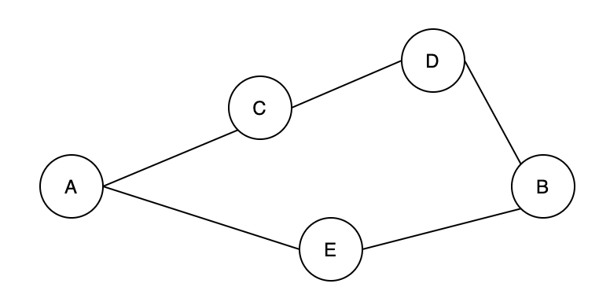

Ранее мы узнали, как проверить связность между двумя вершинами с помощью структуры данных «непересекающееся множество». Теперь давайте переключимся и рассмотрим: как нам дать граф, чтобы найти все его вершины и как мы можем найти все пути между двумя вершинами?
Алгоритм поиска в глубину идеален для решения подобных задач, поскольку он может исследовать все пути от начальной вершины до всех остальных вершин. Начнем с рассмотрения примера. На рисунке 7 имеется пять вершин [A, C, D, B, E]. Даны две вершины A и B, между ними есть два пути. Один путь — [A, C, D, B], а другой — [A, E, B].

Figure 7. An undirected graph
В теории графов алгоритм поиска в глубину (сокращенно DFS) в основном используется для:
1. Пройти все вершины «графа»;
2. Пройдите все пути между любыми двумя вершинами «графа».